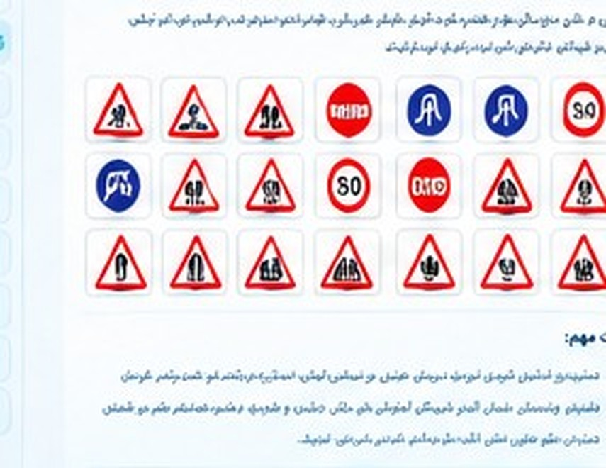

۲۰ آزمون تمرینی آییننامه
توجه: این صفحه ابزار تمرین است، نه آزمون رسمی. سؤالهای داخل سایت نمونههای آموزشی هستند و تأیید نشدهاند که عین سؤالهای آزمون رسمی یا بانک سؤال رسمی باشند. هر نوبت ۳۰ سؤال و ۲۰ دقیقه زمان دارد؛ حدنصاب ۲۶ پاسخ صحیح فقط معیار تمرینی همین سایت است و نتیجه قبولی در این صفحه به معنی قبولی در آزمون رسمی نیست. برای آمادگی دقیقتر، کتاب آموزشی و مقررات معتبر و بهروز را هم مطالعه کنید. متن آییننامه راهنمایی و رانندگی (متن مقررات، نه بانک سؤال آزمون). دانلود PDF سؤالات آییننامه ↓

کارنامه و تحلیل عملکرد
نتایج این مرورگر روی همین دستگاه ذخیره میشود؛ با پاککردن دادههای مرورگر یا استفاده از دستگاه دیگر، تاریخچه ممکن است در دسترس نباشد.
آزمونهای تکمیلشده۰
میانگین امتیاز۰٪
بهترین نتیجه۰٪
پاسخهای اشتباه اخیر۰
نمودار رشد در آزمونها
پس از تکمیل آزمونها، نمودار پیشرفت شما اینجا نمایش داده میشود.
نقاط قوت و زمینههای نیازمند تمرین
تاریخچه آزمونها
سؤالهایی که نیاز به مرور دارند
آزمون شماره ۱سؤال ۱ از ۳۰۲۰:۰۰